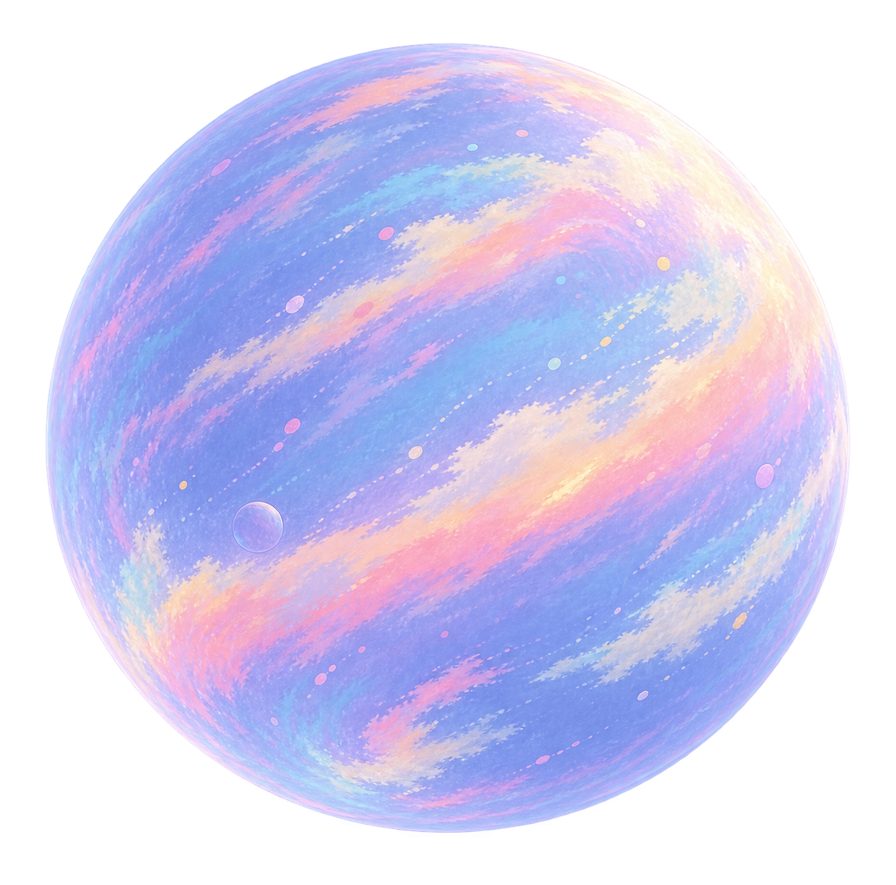

master-v1.png1261 × 1247 · RGBA PNG
No ring, no re-styling, no CSS volume treatment.
The master’s painterly bands, pastel palette, soft light falloff, and internal surface marks are retained.
No ring, no re-styling, no CSS volume treatment.
The master’s painterly bands, pastel palette, soft light falloff, and internal surface marks are retained.